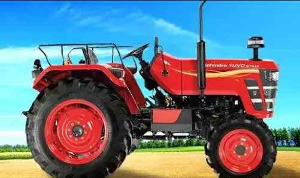
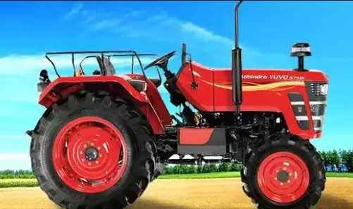

Welcome to AgroNexa, your premier destination for farm equipment rentals. At AgroNexa, we understand that the right equipment can make all the difference in your agricultural endeavors. Our platform connects farmers and agricultural enthusiasts with a wide range of top-quality farm equipment available for rent. Whether you need tractors, plows, harrows, or specialized machinery, AgroNexa simplifies the process of finding, renting, and returning the tools you need to cultivate success. With our user-friendly interface and a vast network of equipment providers, AgroNexa is here to empower your farming experience and help you reap the benefits of efficiency and productivity. Start your journey with AgroNexa today and unlock the potential of your agricultural pursuits.
AgroNexa goes beyond being just a typical farm equipment rental platform. We take your agricultural success to the next level with our cutting-edge inbuilt Crop Recommendation System. Our innovative system factors in multiple key elements to provide you with the most accurate and beneficial crop suggestions. By analyzing soil nutrient content, seasonal variations, and your available credit, AgroNexa offers personalized recommendations that help you make informed planting decisions.
But we don't stop there. AgroNexa also takes care of your equipment needs. Once the system suggests the ideal crop for your conditions, it seamlessly integrates with our extensive inventory of rental equipment. You'll receive tailored equipment recommendations related to the chosen crop, ensuring you have access to the right tools for your agricultural journey.
With AgroNexa's holistic approach, you not only receive crop recommendations that maximize your yield but also easy access to the equipment that makes it all possible. It's all about simplifying and enhancing your farming experience, from planning to harvest.


 
